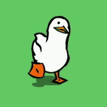

Techical side:
- Section that will ask player's name in the beginning and store it for dialog purposes.
- Keep variables that will count the decisions the player makes.
- "angry" and "decision" counter that will decide if you clear the date or not.
- interactive elements on screen that the user can click to decide conversation cues.
- changing CSS animation dependent on "angry" variable.
- two different endings- success and failure
- possibly integrate sound depending on time left